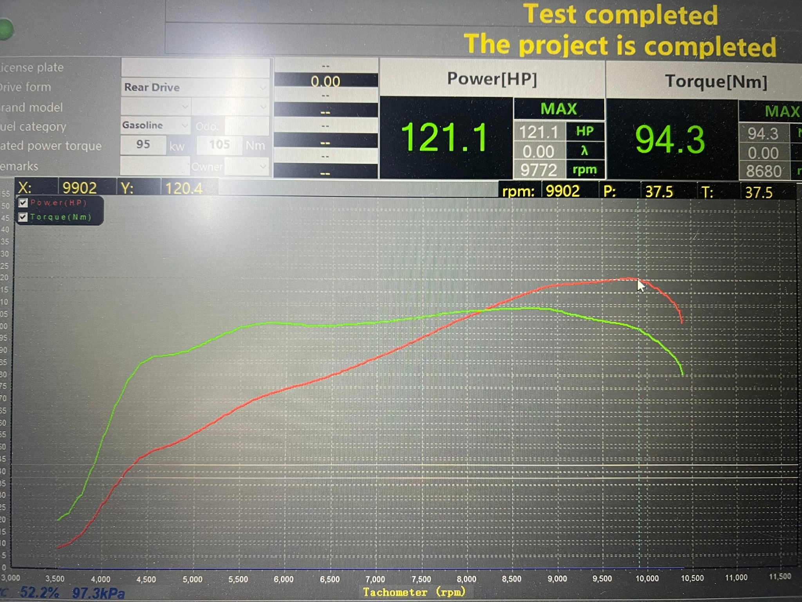
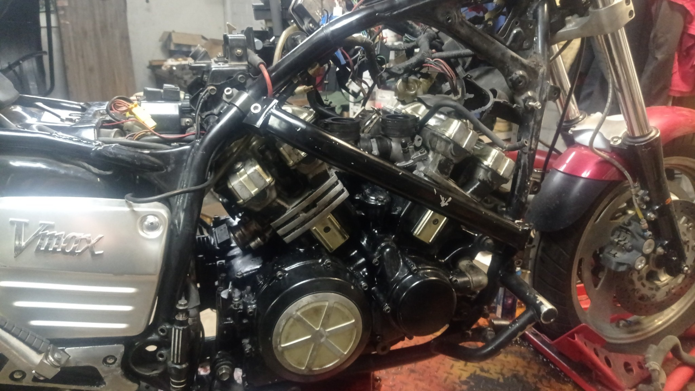
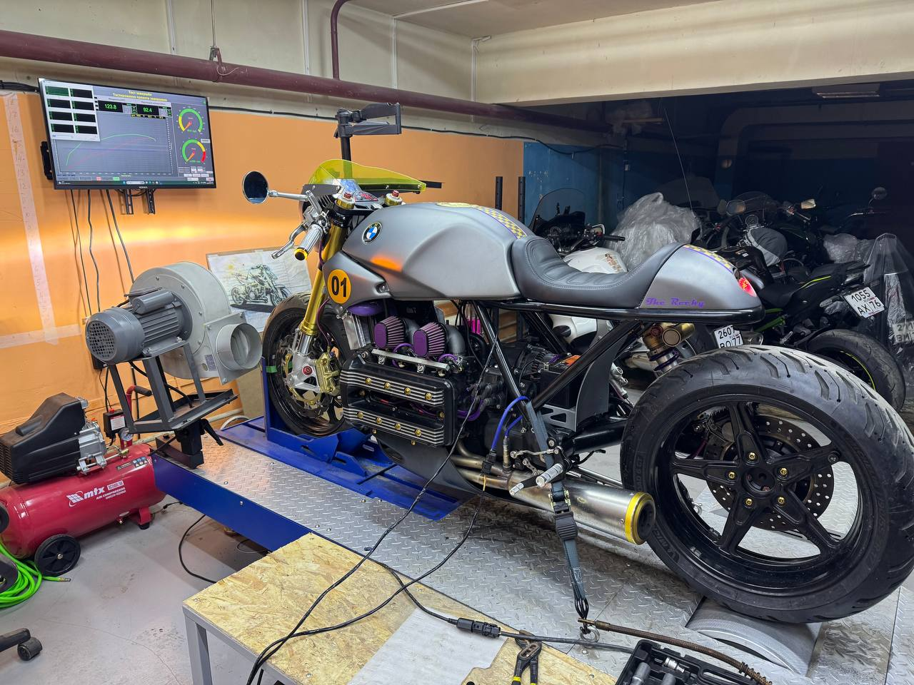
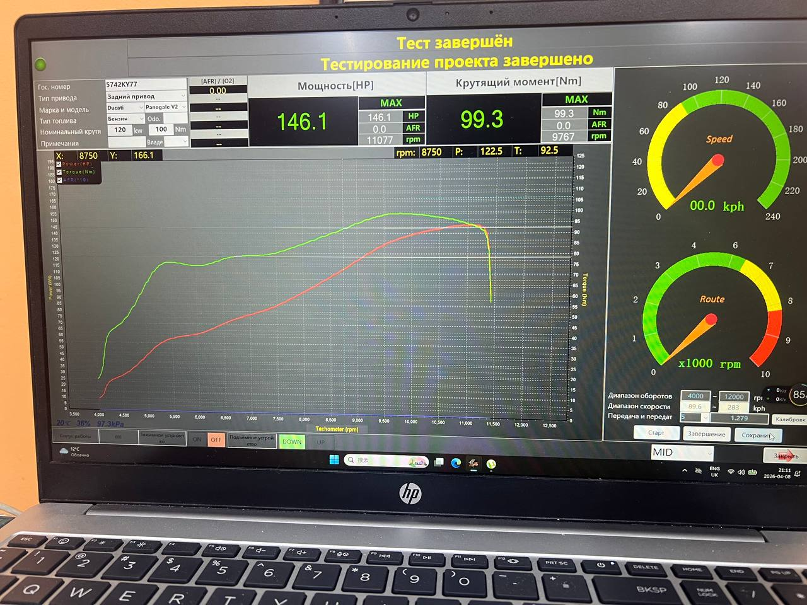
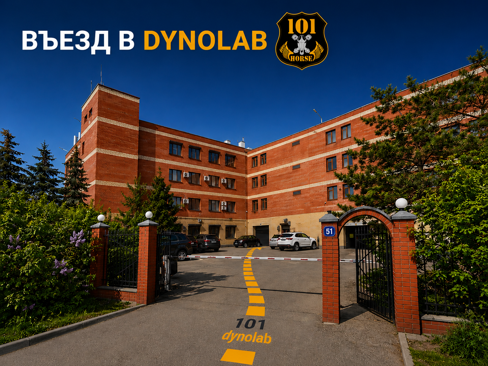
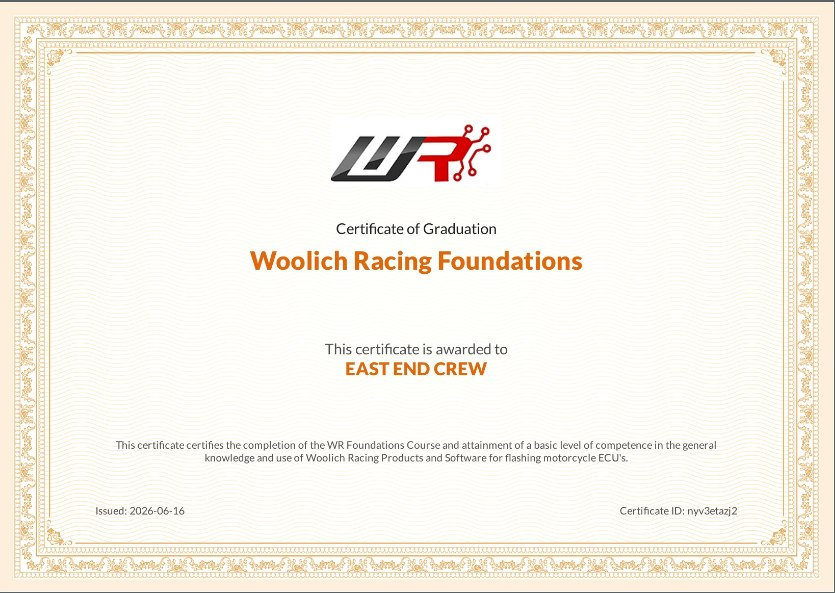

Галерея мастерской и диностенда
Реальные фотографии мастерской, заездов на диностенде и текущих проектов.











Независимая мастерская в Москве, специализирующаяся на тестах на диностенде, диагностике производительности и калибровке ECU для современных спортбайков, нейкедов, туристических и кастомных мотоциклов.
Мы независимая мото-мастерская в Москве. Наша работа объединяет механическую экспертизу, тесты на диностенде и диагностику производительности для достижения стабильного результата в реальных условиях.
Фокус на мотоциклах, практичной инженерии и сервисе, ориентированном на результат.
Замеры мощности, базовые проверки и подтверждение результата после модификаций.
Анализ топливовоздушной смеси как часть стабильного диностендового процесса.
Постепенно расширяем профессиональные возможности по калибровке и прошивке ECU.
Практические решения по производительности для тех, кому нужны цифры, а не догадки.
Измерение мощности и крутящего момента, сравнение до и после, проверка реальной отдачи.
Поиск проблем со смесью, откликом и подачей под нагрузкой.
Рабочий процесс подготовлен для эффективных сессий настройки на основе AFR.
Профессиональная база для настройки современных ECU на выбранных платформах мотоциклов.
Реальные фотографии мастерской, заездов на диностенде и текущих проектов.




Выберите удобный способ связи для записи на диностенд, настройку ECU или консультацию.
Мастерская в Москве, Россия. Профессиональные услуги по диностенду и настройке ECU для мотоциклов.

101DYNOLAB предлагает профессиональную настройку мотоциклов на диностенде, прошивку ECU и диагностику в Москве.
Мы специализируемся на замерах на диностенде, диагностике с поддержкой AFR и рабочих процессах настройки ECU для современных спортбайков, нейкедов и туристических мотоциклов. Мастерская готовится к решениям на базе Woolich Racing, live data logging и ECU-out flashing для платформ Yamaha, BMW, Suzuki, KTM, Ducati и Honda.
Если вам нужна настройка мотоцикла на диностенде в Москве, прошивка ECU в России или диагностика производительности модифицированного байка, свяжитесь с 101DYNOLAB через сайт.
Команда 101DYNOLAB проходит профильное обучение и работает по стандартам Woolich Racing для современных ECU-платформ.
Это помогает выстраивать предсказуемый процесс диагностики, настройки и подготовки мотоциклов к профессиональной калибровке.
